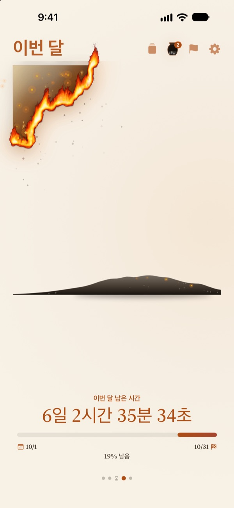
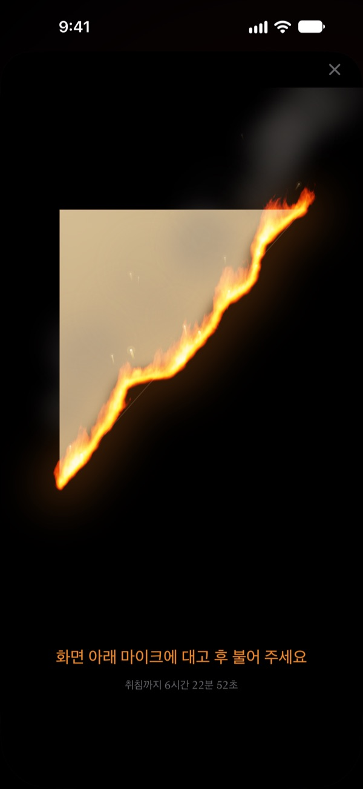
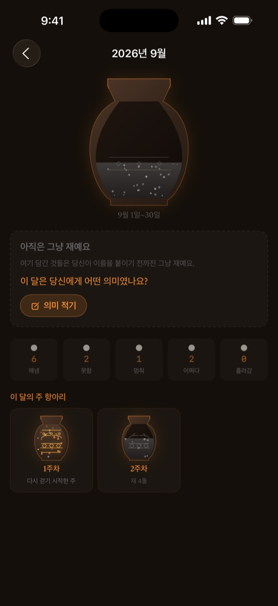

오늘 남은 시간이
눈앞에서 타들어 가요
숫자로 보면 아무렇지 않던 저녁이, 타오르는 양피지로 보면 달라져요. 잠들기 30분 전에는 화면에 후 불어 불을 끄고 하루를 마쳐요.
타오르는 양피지, 후 불어 끄기, 회고는 모두 무료예요.
직접 불어 꺼 보세요
시각을 잠들기 직전으로 옮긴 뒤 버튼을 길게 누르거나, 마이크에 대고 후 불어 보세요.
"벌써 열두 시?" 하고 놀란 적 있나요?
저녁을 먹고 잠깐 쉬었을 뿐인데 하루가 끝나 있어요. 시계의 숫자는 매일 똑같아 보여서, 시간이 줄어드는 게 잘 느껴지지 않아요. 불타는 내인생은 남은 시간을 타들어 가는 양피지로 보여 줘서, 저녁이 사라지기 전에 알아차리게 해 줘요.
하루, 한 주, 한 해가 타들어 가요
일어난 순간부터 잠들 시각까지 양피지가 천천히 타요. 이번 주, 이번 달, 올해 남은 시간도 같은 양피지로 볼 수 있어요.
목표 날짜가 있는 일은 데드라인으로 더해 두면 그 날까지 남은 시간을 함께 세요.

후 불어 끄는 하루의 끝
잠들기 30분 전부터 타오르는 양피지에 숨을 불어 불을 꺼요. 입김의 세기만 보고 아무것도 녹음하지 않아요.
불을 끄고 남은 조각은 모아 둬요. 조각을 뒤집어 뒷면에 오늘을 한 줄로 남길 수도 있어요.

지나간 시간은 재로 남아요
하루를 돌아보며 한 줄 회고를 쓰고, 그 시간을 어디에 썼는지 두 축 위에 점으로 놓아요. 회고는 주와 달마다 재 항아리에 쌓이고, 회고 책에서 다시 읽을 수 있어요.
재의 흐름 화면은 시간이 어디로 갔는지 분포 그래프와 불씨 달력으로 보여 줘요.

시작은 세 단계면 돼요
- 1
기상과 취침 시각을 정해요
오른쪽 위 톱니바퀴에서 바꿔요. 그 시각에 맞춰 양피지가 타기 시작하고 꺼져요.
- 2
보고 싶은 기간을 골라요
하루, 한 주, 한 달, 한 해 중 넘겨 보거나, 설정에서 필요 없는 페이지를 숨겨요.
- 3
위젯을 더해요
홈 화면이나 잠금화면에 두면 앱을 열지 않아도 남은 시간이 보여요.
남은 시간을 보는 곳
- 하루
- 일어난 순간부터 잠들 시각까지
- 한 주 · 한 달 · 한 해
- 이번 주, 이번 달, 올해 남은 시간
- 자유시간
- 잠과 일을 뺀 나만의 시간이 지나갈 때만 이번 주 양피지가 타요 (프로)
- 데드라인
- 목표 날짜까지 남은 시간. 1개까지 무료
- 홈 화면 위젯
- 하루 양피지는 소형·중형·대형, 주·달·해와 데드라인은 소형·중형
- 잠금화면 위젯
- 원형, 직사각형, 한 줄 모양
- 다이나믹 아일랜드 · 잠금화면 실시간 현황
- 잠들기 1시간 전부터, 또는 하루 종일. 설정에서 고르거나 끌 수 있어요
다이나믹 아일랜드를 펼치면 타는 양피지와 함께 자세한 시간이 펼쳐져요.
양피지는 무료, 더 담고 싶으면 프로
무료
- 하루, 한 주, 한 달, 한 해 양피지
- 잠들기 30분 전 후 불어 끄기와 조각 모으기
- 한 줄 회고, 재 항아리, 회고 책
- 아침 확인과 건강 앱 수면 기록 연결
- 홈 화면·잠금화면 위젯과 다이나믹 아일랜드
- 데드라인 1개
불타는 내인생 프로
- 나만의 자유시간만 태우기
- 양피지 빛깔 테마: 달빛 한지, 청자, 노을
- 불꽃 종류: 들불, 숯불, 불티
- 모은 조각을 카드와 포스터 이미지로 공유
- 회고 책을 PDF로 내보내기
- 지난 열두 달의 재 흐름
- 데드라인 무제한
구독이 아니에요. 한 번 결제로 평생 쓰고, 앞으로 생기는 프로 기능도 모두 포함돼요.
프로를 산 기기가 바뀌었다면 설정에서 구매 복원을 누르면 돼요.
자주 묻는 질문
위젯과 앱의 시간이 다르게 보여요.
홈 화면 위젯은 iOS 구조상 매초 새로 그려지지 않아요. 앱을 열면 위젯이 바로 맞춰져요. 초 단위로 줄어드는 시간은 다이나믹 아일랜드와 잠금화면 실시간 현황에서 볼 수 있어요.
후 불어도 불이 꺼지지 않아요.
불 끄기는 잠들기 30분 전부터 할 수 있어요. 마이크 권한을 허용했는지 확인하고, 화면 아래쪽 마이크에 가까이 대고 1초쯤 길게 불어 주세요. 짧게 한 번 튀는 소리로는 꺼지지 않아요.
제 목소리가 녹음되나요?
아니요. 입김의 세기만 확인하고 소리는 녹음하거나 저장하지 않아요.
잠든 뒤에는 무엇이 보이나요?
취침 시각이 지나면 불타는 하트가 나타나 일어날 때까지 잠이 얼마나 지났는지 보여 줘요. 다음 날 아침에는 어젯밤 제시간에 잤는지 묻고, 늦게 잤다면 그만큼 오늘 아침 양피지가 그을려요. 건강 앱을 연결하면 묻지 않고 기록된 잠든 시각을 써요.
알림은 언제 오나요?
취침 1시간 전에 와요. 오지 않으면 설정 > 알림 > 불타는 내인생에서 알림이 허용되어 있는지 확인해 주세요.
배터리를 많이 쓰나요?
앱 안의 카운트다운은 1초마다 바뀌지만, 위젯은 iOS가 관리하는 저전력 방식으로 갱신돼서 배터리 영향이 적어요.
제 기록은 어디에 저장되나요?
기상·취침 시각, 데드라인, 회고와 항아리는 기기 안에만 저장돼요. 개발자에게는 익명 사용 통계와 오류 진단, 직접 보낸 의견만 전달돼요. 광고와 추적은 없어요.
프로는 구독인가요?
아니요. 한 번 결제하면 평생 쓸 수 있어요. 기기를 바꿨다면 설정에서 구매 복원을 눌러 주세요.
버그 신고, 기능 제안, 그 밖의 문의는 leeo@kakao.com로 보내 주세요.